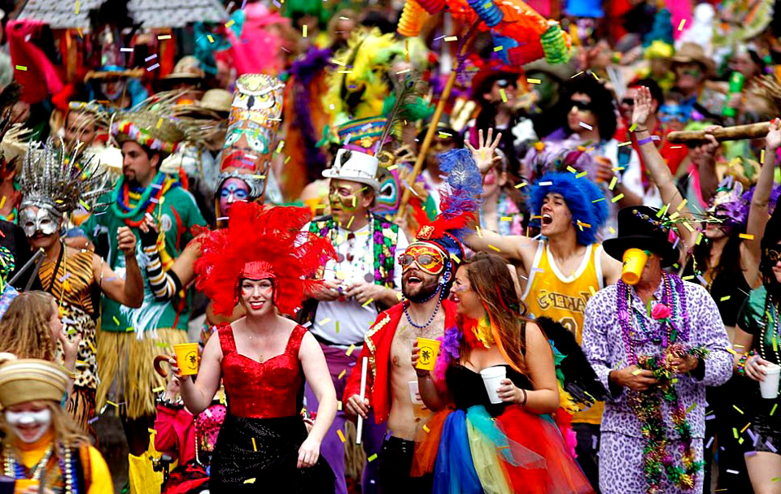
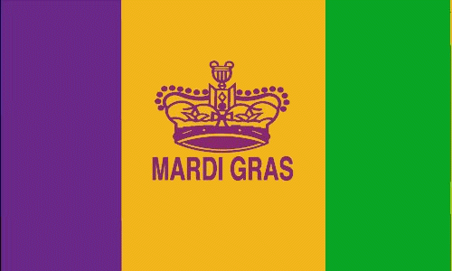

Mardi Gras was brought to Louisiana by early French settlers. The first record of the holiday was in Louisiana in 1699. The starting date of festivities in New Orleans is unknown, but an account from 1743 notes that the custom of Carnival balls was already established by that date. Once a year New Orleans descends into a flurry of chaos, crowds, and colorful masks as the city celebrates Mardi Gras– the last day of the Carnival celebration. Mardi Gras, or Fat Tuesday as it's also known, is the Christian feasting period before the start of Lent on Ash Wednesday. But in the Big Easy the day of indulgence takes on a whole new meaning as galas, parades, and parties take over the city– it's even a Louisiana state holiday. This year the festivities will take place on March 5th, so whether you celebrate by catching beads on Bourbon or digging into a King Cake– here's everything you need to know about the unique history and culture of Mardi Gras. An unusual Mardi Gras celebration is found in the rural areas surrounding small towns in Cajun Country such as Mamou, Eunice and Church Point. The Courir de Mardi Gras, or the running of the Mardi Gras, involves costumed locals going house to house on horseback, performing tricks and stunts in an effort to secure donations of chicken, sausage, vegetables and rice that will be used at the end of the day to make a massive gumbo for the community at a downtown street party, usually featuring live Cajun and zydeco music.
The Colors:
The colors traditionally associated with Mardi Gras in New Orleans aregreen, gold, and purple. The colors were first specified in proclamationsby the Rex organization during the lead-up to their inaugural parade in1872, suggesting that balconies be draped in banners of these colors. Rex,the King of Carnival, selected the Mardi Gras colors in 1872 to honor thevisiting Russian Grand Duke Alexis Alexandrovich Romanoff, whose housecolors were purple, green and gold.The 1892 Rex Parade theme "Symbolism ofColors"affirmed the Mardi Gras colors meaning. Purple stands for justice,green for faith, and gold for power. The color green is said to representfaith. Beads in this color used to be handed out to people who representedthis characteristic the best. Purple is normally considered to be a royalcolor, and in this instance stands for justice. Gold stands for power andon Mardi Gras, it can be found everywhere. The colors traditionallyassociated with Mardi Gras in New Orleans are green, gold, and purple.
Our mayor:
LaToya Cantrell is the Democratic mayor of New Orleans. She was sworn into office on May 7, 2018, becoming the first woman to lead New Orleans in the city's histor. Cantrell rose to local prominence through her work to recover and restore the Broadmoor neighborhood following Hurricane Katrina in 2005. In 2012, she won a special election for the New Orleans City Council to serve a partial term. Cantrell was elected to a full term in 2014, where she sponsored a measure prohibiting smoking in city bars and casinos. She first entered politics as a member of the Broadmoor Improvement Association, which saved the Broadmoor neighborhood following Hurricane Katrina in 2005 and secured $5 million inpledges from the Clinton Global Initiative to rebuild.